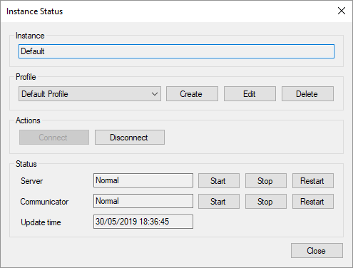
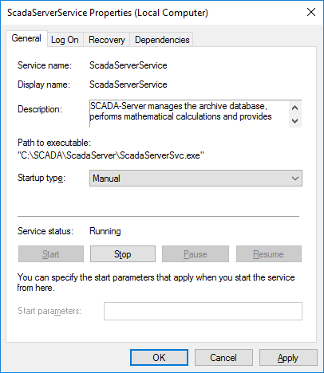

Figura 1. Formulario para iniciar sesión web
Después de instalar Rapid SCADA, se recomienda reiniciar la computadora para que los servicios de Server, Communicator y Agent se inicien automáticamente. Una vez completado el reinicio, ejecute uno de los siguientes navegadores: Google Chrome, Mozilla Firefox o Microsoft Edge. En la barra de direcciones, escriba http://localhost/scada/. Debe abrirse la página de inicio de sesión (vea la Figura 1). Ingrese admin and 12345 en los campos de inicio de sesión y contraseña y haga clic en el botón Login.
Figura 1. Formulario para iniciar sesión web
Para iniciar la aplicación Administrator, utilice el acceso directo ubicado en el menú Start > Programs > SCADA (Inicio> Programas> SCADA). Si por algún motivo faltase el acceso directo, el Administrador se puede ejecutar desde el archivo ejecutable C:\SCADA\ScadaAdmin\ScadaAdmin.exe
La aplicación Administrator incluye las herramientas para gestionar las otras aplicaciones de Rapid SCADA.
Las aplicaciones Server, Communicator y Agent funcionan como servicios. En Windows, utilice services.msc snap-in para administrar los servicios. Se puede ejecutar desde la línea de comandos o desde Control Panel > System and Security > Administrative Tools > Services (Panel de control > Sistema y seguridad > Herramientas administrativas > Servicios). Los nombres de los servicios son: ScadaServerService, ScadaCommService y ScadaAgentService.
Además, existen los archivos svc_start.bat y svc_stop.bat en los directorios de las aplicaciones correspondientes, que permiten iniciar y detener los servicios. Estos archivos por lote deben ejecutarse como administrador.
La aplicación Administrator también permite iniciar y detener el Server y el Communicator. Para administrar los servicios en Administrator, abra un proyecto y luego abra el formulario de estado de la instancia (vea la Figura 2) mediante el botón .

Figura. 2. Estado de la instancia en Administrator
El tipo de inicio predeterminado de los servicios Server, Communicator y Agent es Automático, es decir que los servicios se inician cuando se inicia el sistema operativo y los servicios se detienen cuando se detiene el sistema operativo. Si el inicio automático no es necesario, se puede establecer el tipo de inicio Manual (vea la Figura 3).

Figure 3. Estableciendo el tipo de inicio de los servicios de Windows
Para abrir la aplicación web llamada Webstation, ingrese http://compname/scada/ en la barra de direcciones del navegador, donde compname es el nombre del host o la dirección IP de la computadora con la aplicación web instalada y scada es el directorio virtual especificado durante la instalación. Si Webstation se abre en la misma computadora en la que está instalado, es posible usar http://localhost/scada/ o http://127.0.0.1/scada/
El nombre de usuario predeterminado es: admin
La contraseña predeterminada es: 12345